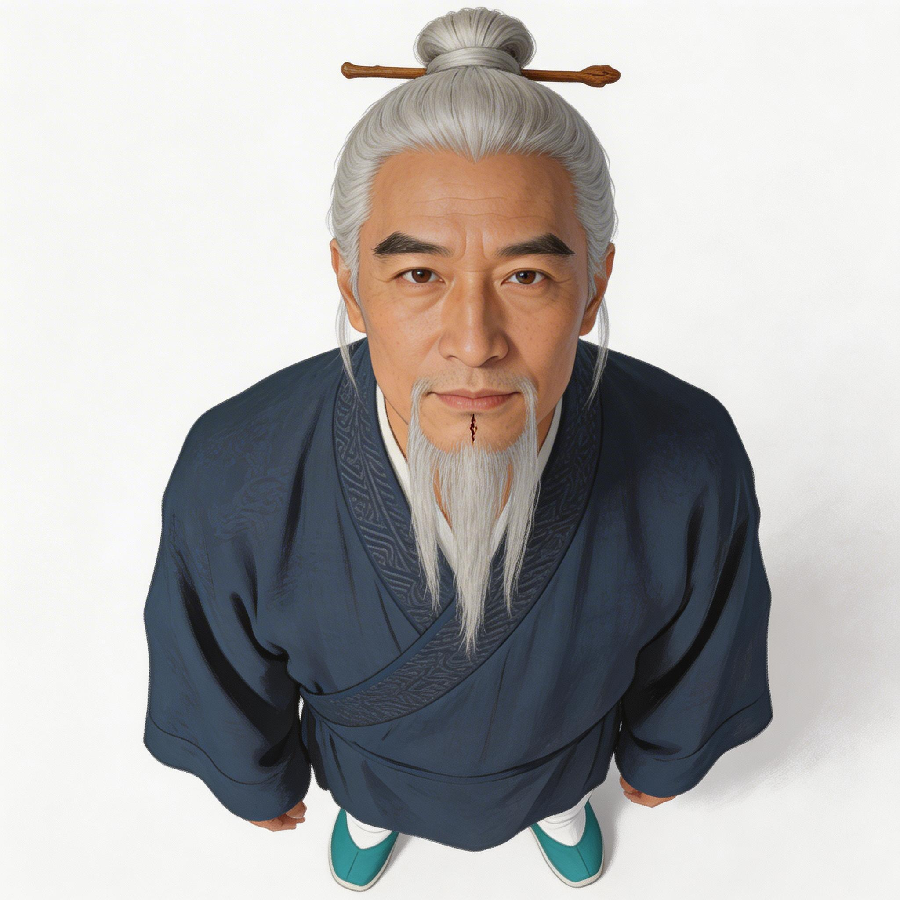
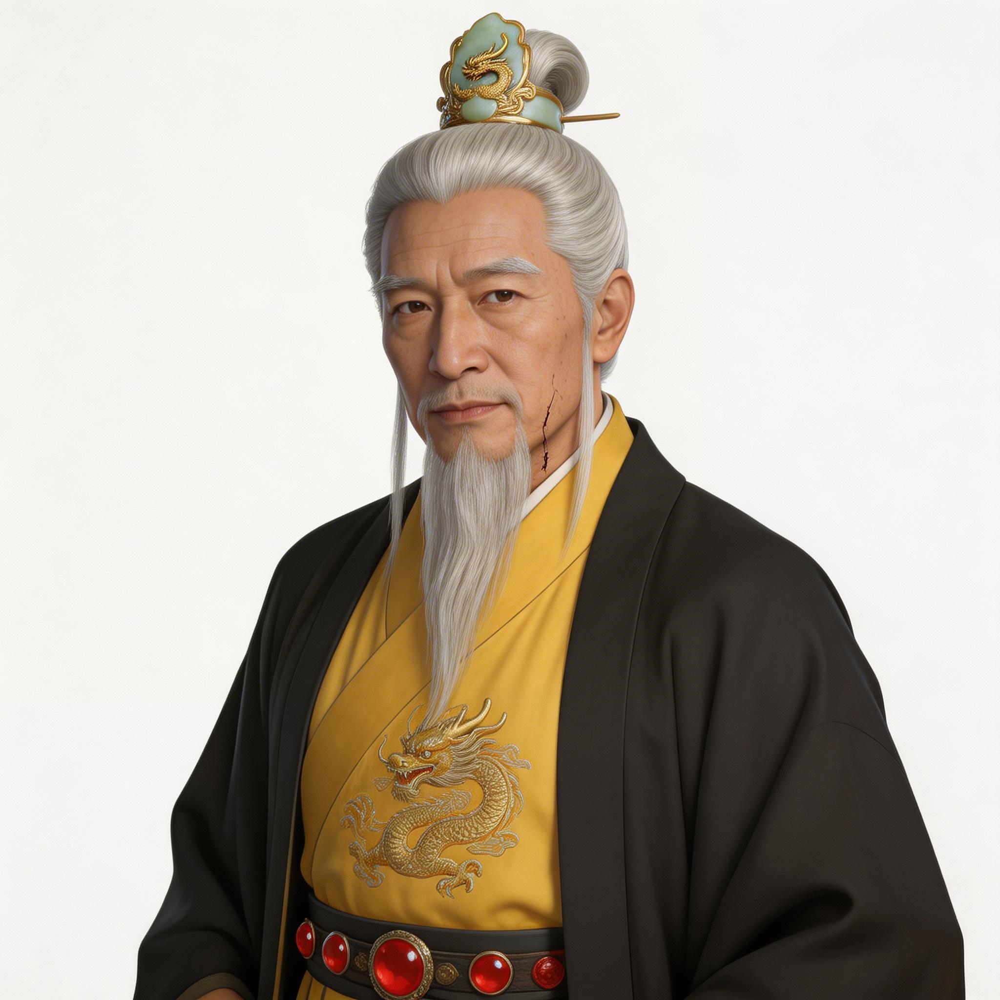
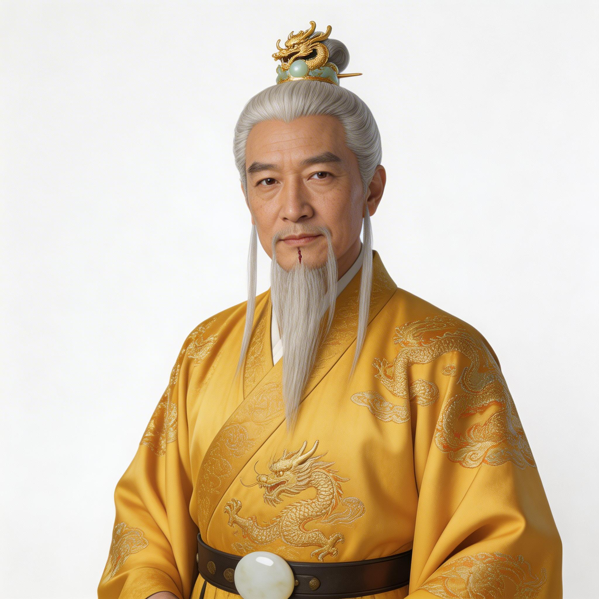
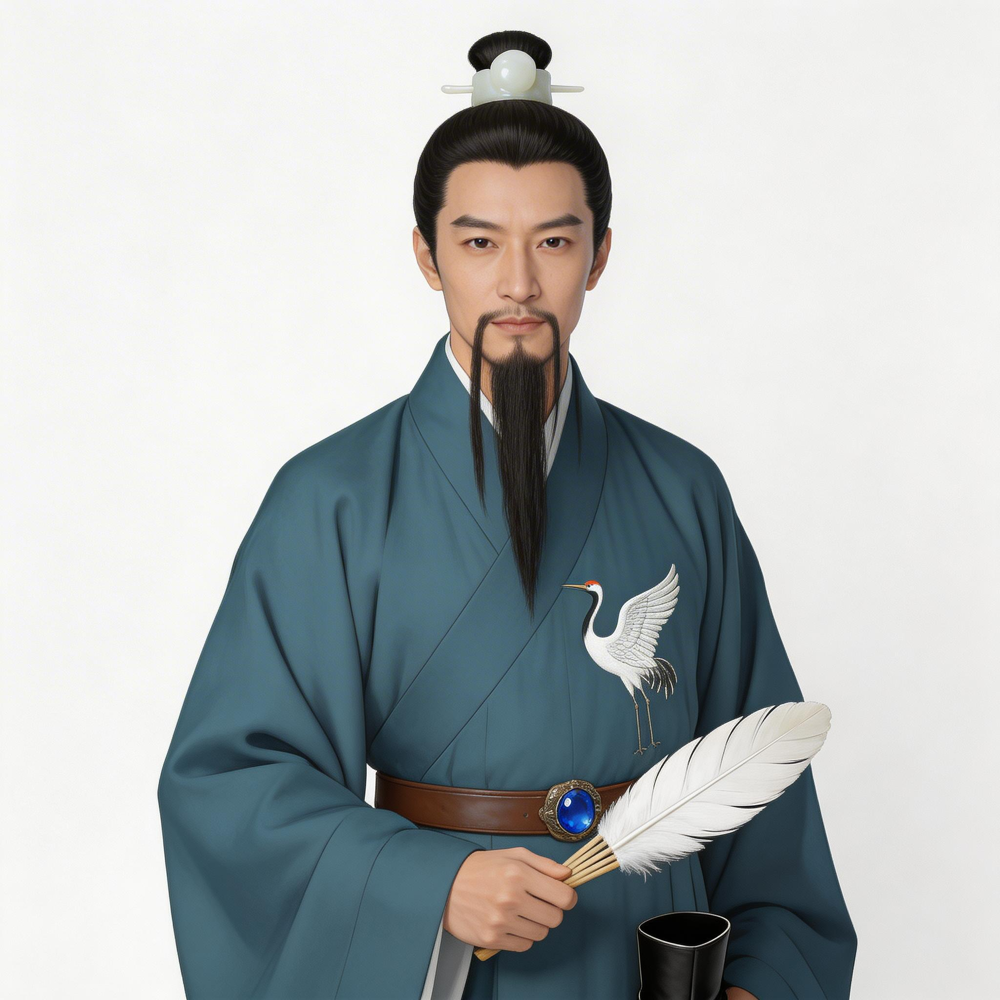
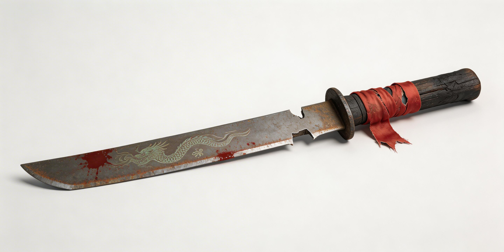

job-20260402-203711-36bad5
创意：古装历史短剧《夷陵之火》：刘备得知关羽被孙权伏杀，悲愤之下决心为兄弟报仇，不顾诸葛亮劝阻执意伐吴
世界圣经
- 刘备（蜀汉昭烈皇帝，主角）— 重情重义，性格坚韧隐忍，但得知兄弟死讯后变得偏执易怒，不听劝谏，骨子里有帝王的决断也有兄弟情深的柔软
- 诸葛亮（蜀汉丞相，主要配角）— 沉稳理智，思虑周全，对蜀汉忠心耿耿，面对偏执的刘备既焦急又无奈，始终保持清醒的大局观
画风：写实古装历史正剧风格，电影质感，自然光结合人工暖光，画面色调偏厚重古朴，4K超清画质，服化道严格参考东汉末年的历史形制
参考图（10 张）

char_刘备_casual_front
char_刘备_formal_front
char_刘备_front
char_诸葛亮_front

char_诸葛亮_official_front
prop_关羽的青龙偃月刀残件场景 1：议事殿定策
蜀汉皇宫议事殿，上午辰时，春末微暖，刘备收到关羽的青龙偃月刀残件后召诸葛亮议事，决意伐吴
Shot 1 (5.0s)
画面：Liu Bei, 62-year-old male, silver long hair tied in a man's bun fixed with gilde
光线：warm natural light from outside the hall mixed with warm yellow flame light from bronze lamps
色调：heavy desaturated amber and dark brown
对白（刘备）：孙权小儿害我二弟，此仇不共戴天！
Shot 2 (5.0s)
画面：Zhuge Liang, 42-year-old male, ink-black long hair tied in a man's bun fixed wit
光线：warm natural light from outside the hall mixed with warm yellow flame light from bronze lamps
色调：heavy desaturated amber and dark brown
对白（诸葛亮）：陛下！曹魏才是国贼，此时伐吴只会让曹魏坐收渔利，万不可冲动啊！
Shot 3 (5.0s)
画面：Liu Bei, 62-year-old male, silver long hair tied in a man's bun fixed with gilde
光线：warm natural light from outside the hall mixed with warm yellow flame light from bronze lamps
色调：heavy desaturated amber and dark brown
对白（刘备）：朕意已决！即刻传朕旨意，举全国之兵伐吴，谁敢再谏，定斩不饶！
最终视频
Generated by AI Drama Pipeline